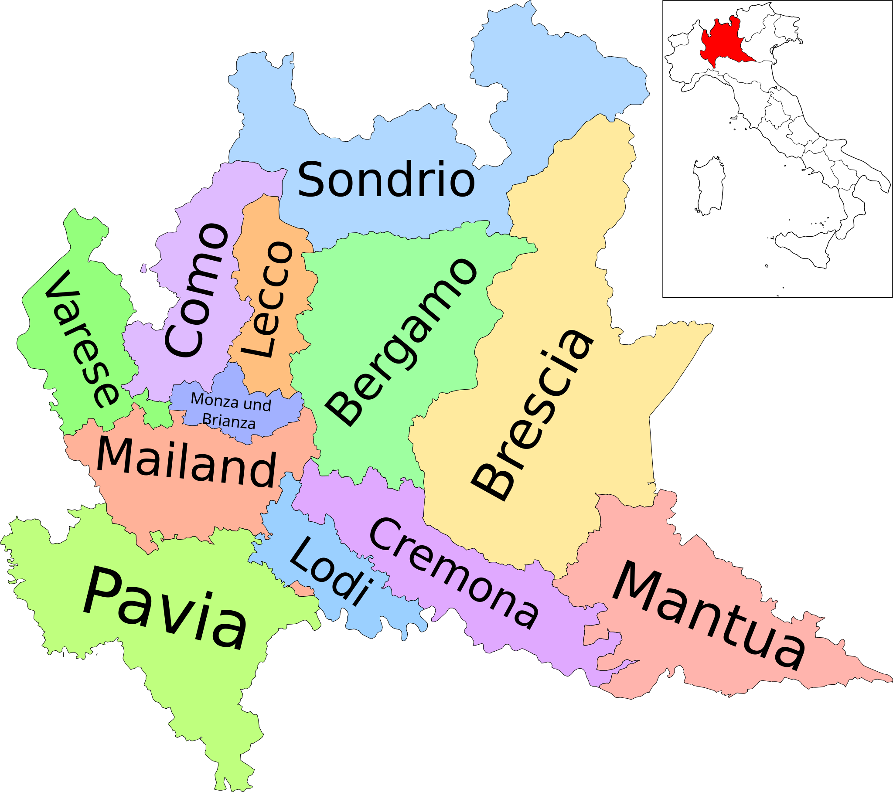
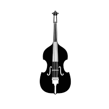

Home
History
Purchasing a Double Bass
Double Bass Accessories
Images
Home
History
Purchasing a Double Bass
Double Bass Accessories
Images
The double bass has its roots in the 1500, developed in Italy’s Brescia and Cremona regions to complete the lower register of the violin family, below the cello, and shares the same register as the tuba and the timpani. In the double bass’ early days, it was fretted exclusively, but today, double basses are fretless.

In the 1600, gut strings were introduced (smaller strings, made from the processed intestines of certain animals), which made the instrument more playable, and helped develop the scale length of a modern double bass. The double bass also had frets around this time, made of tied-on gut.

Up until the early 20th century, the double bass had only 3 strings, that the player tuned to best suit the music that they were playing. Now, double basses have four (or five) strings with two basic tunings for it: classical and solo. Classical basses are tuned to E, A, D, G, while solo basses are tuned up a whole step to F#, B, E, A.